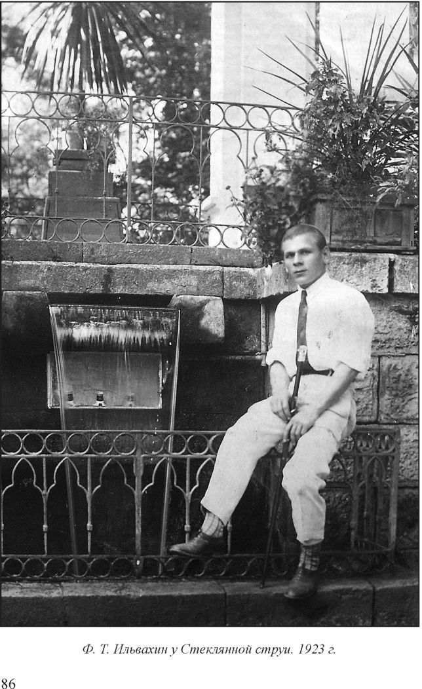
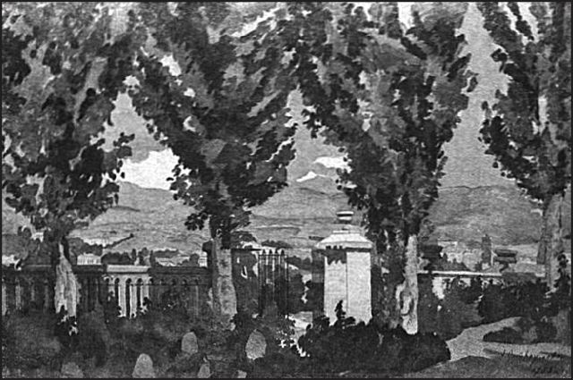

Страницы авторов "Тёмного леса"
Пишите нам! temnyjles@narod.ru
Самая старая фотография в бабушкином альбоме - мой прадед, модно одетый по тому времени молодой человек, Федор Ильвахин в Кисловодске. Лето 1923 года. Прошло 90 лет - но место и сейчас хорошо узнаваемое - Стеклянная Струя. Металлическая фигурная решетка-ограда, водяной каскад. За ним - не убранные к тому времени еще патроны для электрических лампочек, которые до 1917 года освещали разноцветными огнями каскад воды. Сама беседка кирпичная (тогда не было облицовки плитками доломитизированного известняка) и украшена пальмами и другими экзотическими растениями. И вот это все никак не вязалось с моими прежними представлениями об одном из первых советских курортных сезонов. Литература, с которой я начинал знакомство с историей родного города, привила мне представление, что курорт как минимум до середины 1920-х годов не мог преодолеть разруху, которая стала результатом событий гражданской войны. Но оказывается, не все было так мрачно. Курортный сезон 1923 года прошел довольно оживленно и оказался связан со многими примечательными событиями, о которых мне и хотелось бы поведать в этой статье...
По правде сказать, сезон 1923 года, хотя и был первым полноценным за советскую историю курорта, в то же время не являлся первым фактически. Еще не отгремела на Кавказе гражданская война, как потянулись на курорт отдыхающие. Уже в 1920 году в Кисловодск приехала на отдых и лечение Инесса Арманд. Примерно в то же время на курорте побывал один из крупнейших поэтов-символистов, философ Вячеслав Иванов. На одной из бывших дач функционировал дом отдыха газеты "Южный край". К 1923 году уже очень многие бывшие частные дачи, гостиницы и пансионаты оказались национализированными и в них стали открываться санатории и дома отдыха. Среди них санаторий Военкурстанции (ныне санаторий министерства обороны), санаторий ЦеКУБУ (ныне им. А.М. Горького) и многие другие, а также дома отдыха ВЦИК, ЦеКПроса, Хлебопродукта и др. Оставались также частная гостиница Сиднева и дача Погосской - каким то чудом уцелевших дореволюционных владельцев.
На курорт потянулись отдыхающие по профсоюзным и социальным путевкам. Это были самые разные люди - служащие, работники образования, деятели культуры и науки и многие другие. Заинтересовалось курортом и высшее партийное руководство страны. Потому неудивительно, что в августе 1923 года в Кисловодске состоялось важное событие, имевшее политическое значение в ранней истории советского государства. Оно известно как "пещерное совещание". Политические мемуаристы разнятся во мнениях - одно ли это было совещание или несколько. Но в главном все мнения сходятся. Это была инициированная Г.Е. Зиновьевым и Н.И. Бухариным попытка ряда видных партийных деятелей ограничить власть генерального секретаря ЦК И.В. Сталина, который пользовался тяжелым состоянием здоровья В.И. Ленина и уверенно шел на вершину политического олимпа. Так получилось, что на отдыхе в Кисловодске в то время находились Г.Е. Зиновьев, Н.И. Бухарин, М.В. Фрунзе и Г.Е. Евдокимов. Для участия в этом тайном совещании, которое по легенде проходило в одной из пещер Кисловодска (скальных гротов в районе парка и курортной зоны очень много) из Ростова был вызван даже К.Е. Ворошилов. Партийные товарищи сошлись во мнении, что Сталин фактически установил свою диктатуру в Секретариате и Оргбюро ЦК, все делает без ведома и согласия Политбюро, и приняли решение о том, что в состав Оргбюро, административная роль которого очень выросла, необходимо ввести Каменева (или Зиновьева и Бухарина) и Троцкого, который, кстати, в совещании участия не принимал. Так они рассчитывали приглядывать за деятельностью и политическими устремлениями генерального секретаря. Участники совещания написали и передали через Г.К. Орджоникидзе письмо Сталину с изложением своих предложений, а тот якобы даже спешно приехал в Кисловодск и "успокаивал" своих товарищей, пригласил их на заседания Оргбюро. Но реально только лишь Зиновьев пару раз присутствовал на них. Из воспоминаний Анастаса Микояна известно также, что Сталин внешне выказал готовность даже оставить свой пост, если "товарищи настаивают". Но политизировать Секретариат как того требовали Зиновьев и его единомышленники, Сталин отказался. Не приняли это и другие члены ЦК. Так что план, задуманный на совещании, фактически провалился. Сталин по прошествии нескольких лет достиг вершин власти. И нам хорошо известно, каким образом он постепенно расправился со всеми участниками "пещерного совещания" 1923 года. С некоторыми (Фрунзе) - очень скоро. С другими (Зиновьев, Бухарин, Евдокимов) - намного позднее. Только один Ворошилов, которого некоторые считают "ушами и глазами" Сталина, избежал "возмездия". Вот такие политические страсти кипели в Кисловодске еще на заре советского государства...
В тот же сезон состоялся единственный приезд в Кисловодск американской танцовщицы и жены С. Есенина Айседоры Дункан. Отправиться на курорт ее уговорила приемная дочь Ирма. Так вдвоем они и поехали. А верный секретарь и помощник Дункан Илья Шнейдер должен был вместе с Есениным прибыть в Кисловодск несколькими днями позднее. Есенин так и не приехал.
По удивительному стечению обстоятельств, первым кого Дункан встретила в Кисловодске, стал. известный американский журналист и социалист Макс Истмен. Он специально приехал сюда, чтобы писать биографию отдыхавшего тогда на курорте Льва Троцкого. А на вокзал пришел, чтобы купить молока. И вот здесь, прямо на перроне встретился с Дункан. Впоследствии Истмен вспоминал: "И тут появились Айседора с приемной дочерью Ирмой, шагая прямо ко мне в объятья, точно давно потерянные друзья с далекой родины". Примерно две недели Дункан отдыхала и наслаждалась курортной жизнью. Но деятельная натура не могла терпеть долгого безделья. Айседора решила устроить гастрольное турне по Кавказу, начав с Кисловодска. И легкомысленно включила в программу крамольный монархический "Славянский марш" Чайковского. Ирма Дункан вспоминала: "Когда резкие трубные звуки царского гимна огласили тишину, те немногочисленные гуляющие, которые в тот день не принимали минеральные ванны, не могли поверить своим ушам". Наконец, когда дирижер оркестра в Курзале собрался репетировать "Славянский марш" в третий раз, откуда-то возник разъяренный комиссар ЧК и потребовал объяснений: почему на советском курорте исполняется запрещенная монархическая музыка. Когда вечером Айседора вышла на сцену - ее уже поджидали два вооруженных сотрудника ЧК. Смелая и находчивая Дункан, при том никогда не терявшая чувства юмора, обратилась к зрителям: "Там, за сценой, - полицейские. Они пришли арестовать меня! Они пришли арестовать меня, если я попытаюсь танцевать для вас сегодня "Славянский марш" Чайковского. Но я буду танцевать его, даже если они потом арестуют меня. В конце концов, тюрьма не может быть хуже, чем моя комната в "Гранд-Отеле" (ныне главный корпус санатория "Нарзан" - В.Я.)". Находившийся в зале председатель исполкома местного Совета заверил танцовщицу, что она может не опасаться и танцевать все, что включила в программу. Однако на следующий день чекисты в отместку арестовали в "Гранд-Отеле" Шнейдера "за контрреволюционную деятельность". Отчаянная Айседора, недолго думая, в сопровождении гостиничного портье, поздно вечером, при мерцающем свете фонаря добралась до виллы народного комиссара обороны - всесильного тогда еще Троцкого. На виллу Дункан не пропустили, но карандашную записку с прошением от нее Троцкому передал начальник охраны. Потом он вернулся и заверил Айседору, что все будет хорошо, и она может не беспокоиться за своего секретаря. Когда все было улажено, Дункан вместе с Ирмой и Шнейдером поспешила выехать из Кисловодска, и продолжила свое турне в Баку, Тифлисе и Батуме.
В 1923 году в Кисловодск со своим супругом - известным химиком и основоположником промышленного способа получения синтетического каучука Сергеем Васильевичем Лебедевым уже во второй раз приехала на отдых выдающаяся русская художница Анна Петровна Остроумова-Лебедева. Сергей Васильевич отличался очень слабым здоровьем. Поэтому Анна Петровна несколько раз приезжала с ним в Кисловодск, где они подолгу жили. В этот раз они остановились в санатории Дома Ученых (вероятно, ЦеКУБУ - В.Я.), где познакомились со многими выдающимися деятелями науки и культуры: академиком М.Н. Розановым, профессором С.И. Златогоровым, художником А.Ф. Белым. В Кисловодске Остроумова-Лебедева впервые начала писать портреты акварелью и первой, по словам художницы, "жертвой" стал певец И.В. Ершов, который выделялся среди остальных "своей внешностью, живостью и бодрым настроением". Художница вспоминала, как много ей пришлось потратить усилий, чтобы Иван Васильевич забыл, что позирует и, будучи профессиональным артистом, все же не принимал неестественных театральных поз. Портрет И.В. Ершова, написанный Остроумовой-Лебедевой в Кисловодске затем пополнил собрание Третьяковской галереи. Помимо того, что Анна Петровна писала портреты, как и в первый приезд в Кисловодск в 1915 году, она много работала над этюдами, совершая пешие и конные прогулки по ближайшим окрестностям курорта. Когда Сергей Васильевич поправился и окреп после болезни - то стал сопровождать свою супругу во время ее творческих прогулок. Известен пейзаж Кисловодска с балюстрадой и рядом тополей, который был написан в 1923 году. В воспоминаниях Анна Петровна также отмечала, что выполнила во время пребывания на курорте один натюрморт: "букет розового душистого горошка в глиняном горшке. Рядом с ним - лакированная черная шкатулка, из нее выпадают нити янтарных бус, перемешанных с нитями старинных венецианских бус. Чтобы сохранить свежесть красок и яркость бликов янтаря, я не делала рисунка карандашом, а писала сразу, наверняка". Так что из Кисловодска художница привезла домой, в Петроград, очень много новых, различных по жанру работ.
Вот таким интересным и насыщенным событиями политической и культурной жизни страны оказался курортный сезон в Кисловодске в 1923 году.
 
А.П. Остроумова-Лебедева. Кисловодск. Акварель. 1923 г.
Вячеслав Яновский. Неакадемические сочинения